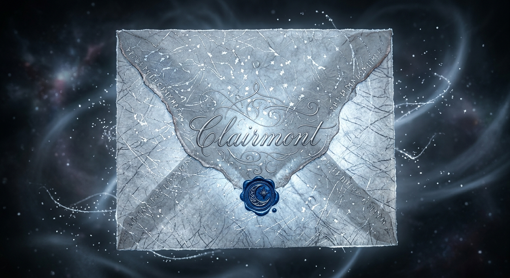

Longtemps, avait cru à l'exactitude des cartes, à cette folle illusion qu'elles ne se contentaient que de tracer des routes, d'aligner des villes voire d'ordonner le monde sous des noms rassurants ; pourtant, beaucoup étaient incomplètes. Elles oubliaient des forêts, ignoraient des montagnes et passaient sous silence l'existence de mondes aussi mystérieux que dangereux.
Ce jour-là, la pluie tombait depuis l'aube. Sur la vitre, les gouttes traçaient des sillons incertains qui se croisaient et se perdaient, reproduisant le dessin d'une géographie invisible. Enfoncée dans son fauteuil, lisait. Autour d'elle, les livres occupaient tout l'espace : monticules bancals sur le plancher, piles menaçantes sur la table de nuit, alignements de fortune le long des fenêtres. Un territoire d'encre et de papier peuplé de mers anonymes et de royaumes déchus. Lorsqu'elle s'immergeait entre leurs pages, le monde extérieur s'effaçait. Les heures glissaient, imperceptibles.
Mais ce jour-là, quelque chose l'empêchait de se concentrer. Une sensation étrange. Comme lorsque l'on entre dans une pièce et que l'on comprend immédiatement que quelque chose a changé sans savoir quoi. baissa son livre. Elle regarda autour d'elle : son bureau, sa bibliothèque, son armoire. Rien d'anormal. Puis son regard se figea. Sur son bureau reposait une enveloppe. hésita, puis se redressa. L'enveloppe n'était pas là quelques instants plus tôt. Elle en était certaine. Son papier semblait tissé de fils argentés. De minuscules reflets parcouraient sa surface comme des étoiles enfermées sous une couche de verre. Elle s'approcha. Au centre était inscrit un nom : Clairmont .
